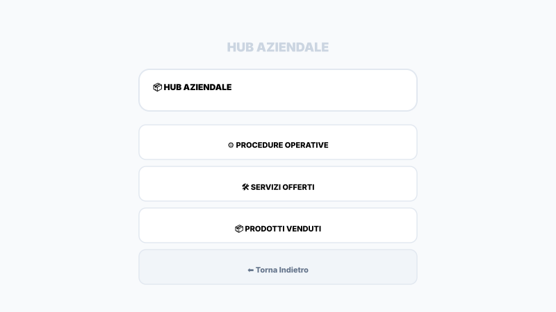
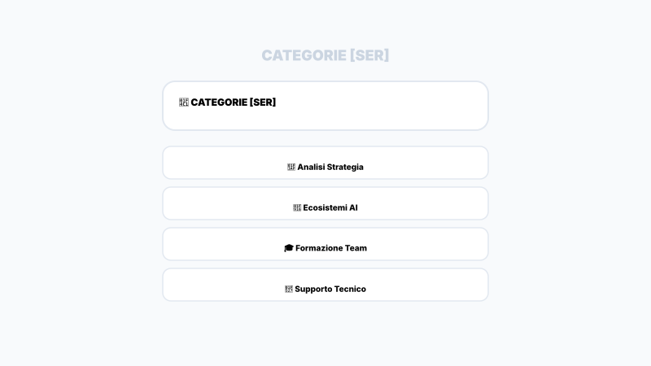
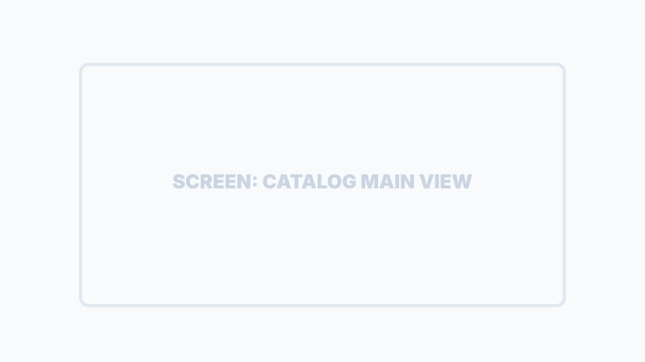
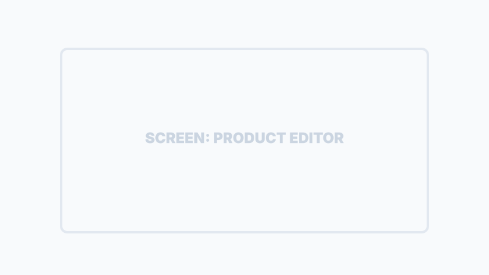
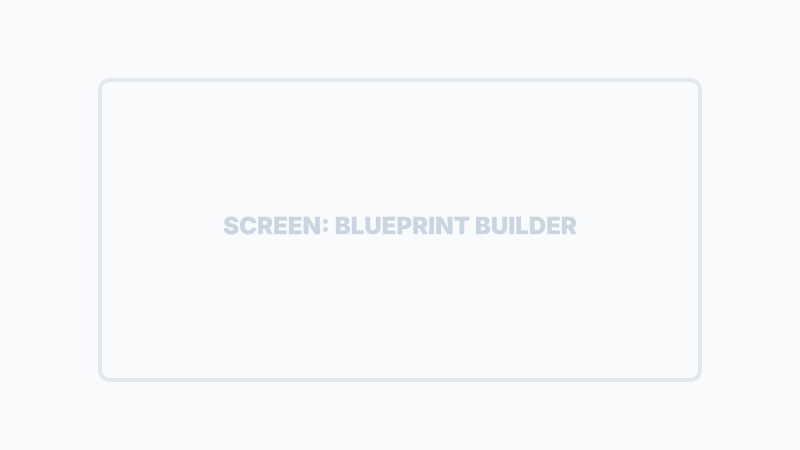

Gestione Catalogo e Procedure
In SiTeBoS, il catalogo non è una semplice lista di prezzi, ma una raccolta di Asset Digitali Intelligenti che alimentano l'intero ecosistema: dal Minisito alle missioni operative.
Organizzazione in Categorie
Le categorie permettono di suddividere il business in aree macro (es. Prodotti, Servizi, Procedure). Una gestione corretta delle categorie facilita la navigazione del cliente nell'Ecommerce e l'assegnazione dei task al team.

⚙️ PROCEDURE: Accesso ai Blueprints operativi.
🛠️ SERVIZI: Listino servizi professionali.
📦 PRODOTTI: Catalogo prodotti fisici/digitali.

Suggerimento AI:
Puoi creare nuove categorie caricando un listino PDF o JSON: l'IA analizzerà il documento per estrarre e suggerire le sottocategorie più adatte.

Ingegneria dei Prodotti/Servizi
Ogni voce del catalogo può essere configurata con parametri granulari che istruiscono l'IA su come vendere ed eseguire quel particolare servizio.
-
Pricing Dinamico
I prezzi possono variare automaticamente in base alle opzioni scelte dal cliente finale durante il checkout.
-
Add-ons e Varianti
Configura opzioni extra (es. "Senza zucchero", "Installazione inclusa", "Garanzia Estesa") con relativi sovrapprezzi.
-
Vincoli Operativi
Definisci se una voce richiede la prenotazione obbligatoria o il controllo preventivo dell'inventario.

I Blueprints (Procedure Operative)
Un Blueprint è la "ricetta" che l'IA e il team umano seguono per eseguire un lavoro alla perfezione. È lo strumento che garantisce la scalabilità della qualità.
Fasi & Step
Suddivisione del lavoro in momenti temporali chiari e sequenziali.
Istruzioni AI
Testi che istruiscono l'IA su come validare ogni passaggio specifico.
Protocollo Qualità
Definizione delle prove (foto, firme, note) da raccogliere sul campo.

Knowledge Base & Inventario
Oltre al catalogo pubblico, SiTeBoS gestisce la conoscenza interna e il carico dei materiali.
Edit Knowledge
Gestione dei frammenti di conoscenza (Kb) usati dall'Assistente AI per rispondere ai clienti.
Carica Acquisto (Inventario)
Importazione di fatture XML/PDF o foto scontrini per caricare l'inventario tramite OCR e AI.